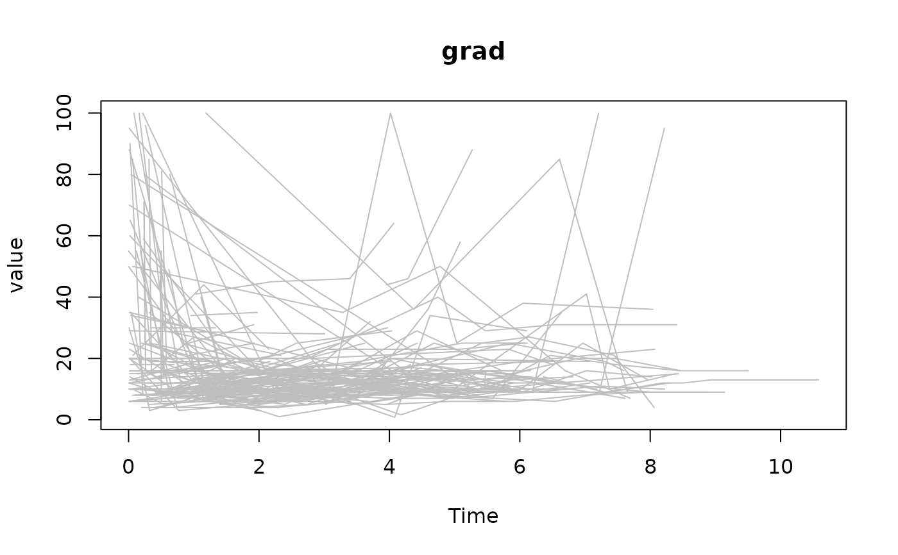

Plot longitudinal data of an object of class jointdata,
for a longitudinal variable. It is possible to plot all the subjects in the
data set, or just a selected subset. See
subset.jointdata.
Usage
# S3 method for class 'jointdata'
plot(x, Y.col, type, xlab, xlim = NULL, ylim = NULL, main = NA, pty, ...)Arguments
- x
object of class
jointdata.- Y.col
column number, or column name, of longitudinal variable to be plotted. Defaults to
Y.col = NA, plotting all longitudinal variables.- type
the type of line to be plotted, see
plotfor further details.- xlab
a title for the x-axis, see
title.- xlim, ylim
numeric vectors of length 2, giving the x and y coordinates ranges, see
plot.windowfor further details.- main
an overall title for the plot; see
title.- pty
a character specifying the type of plot region to be used, see
parfor details.- ...
other graphical arguments; see
plot.
Examples
data(heart.valve)
heart.surv <- UniqueVariables(heart.valve,
var.col = c("fuyrs", "status"),
id.col = "num")
heart.long <- heart.valve[, c(1, 4, 5, 7, 8, 9, 10, 11)]
heart.jd <- jointdata(longitudinal = heart.long,
survival = heart.surv,
id.col = "num",
time.col = "time")
plot(heart.jd, Y.col = "grad", col = "grey")
